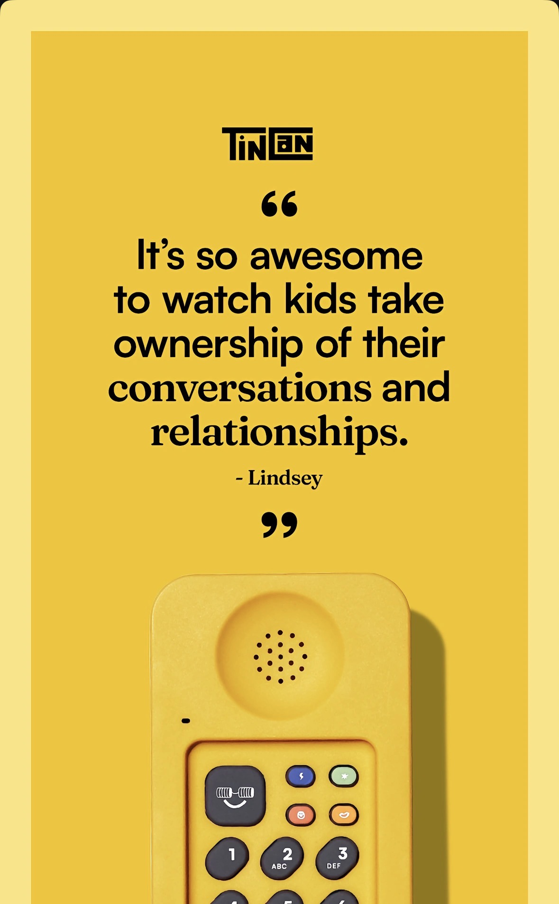
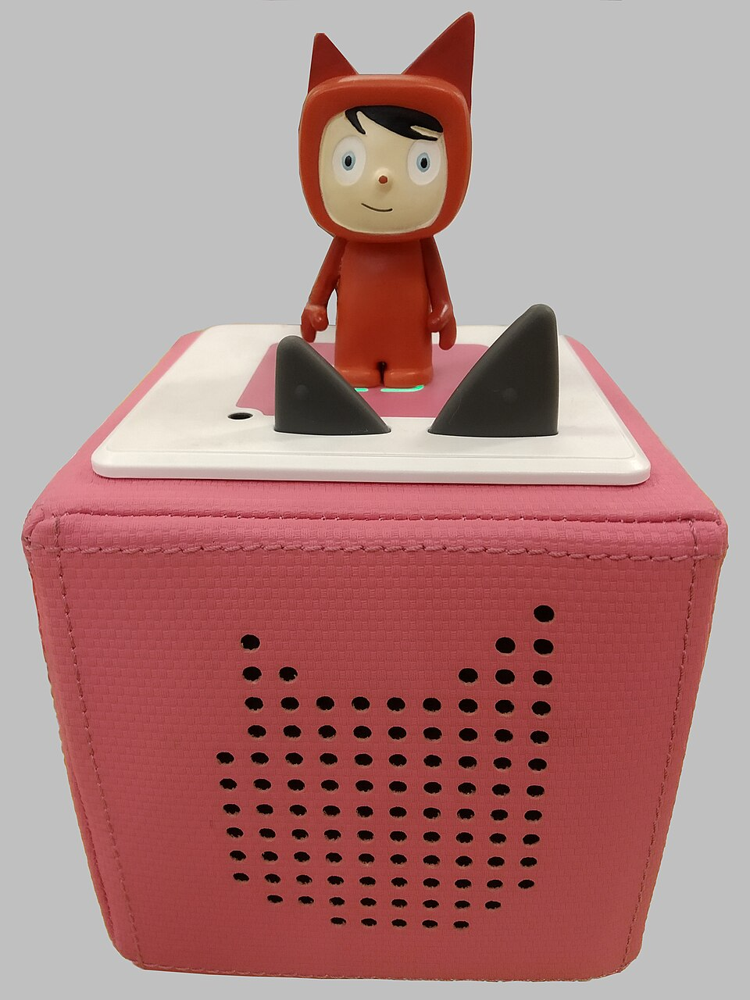
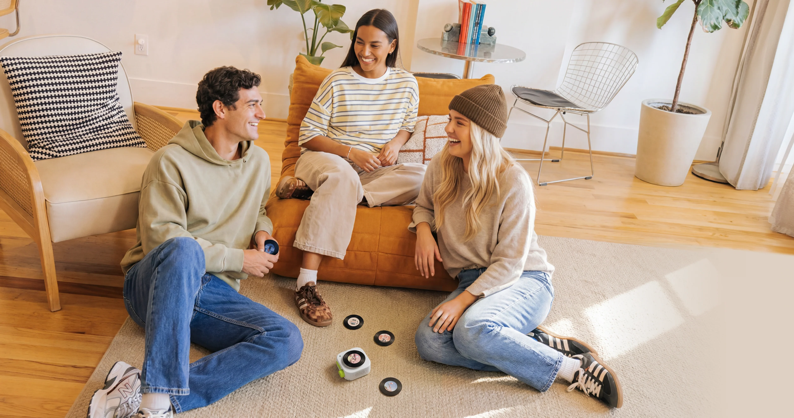
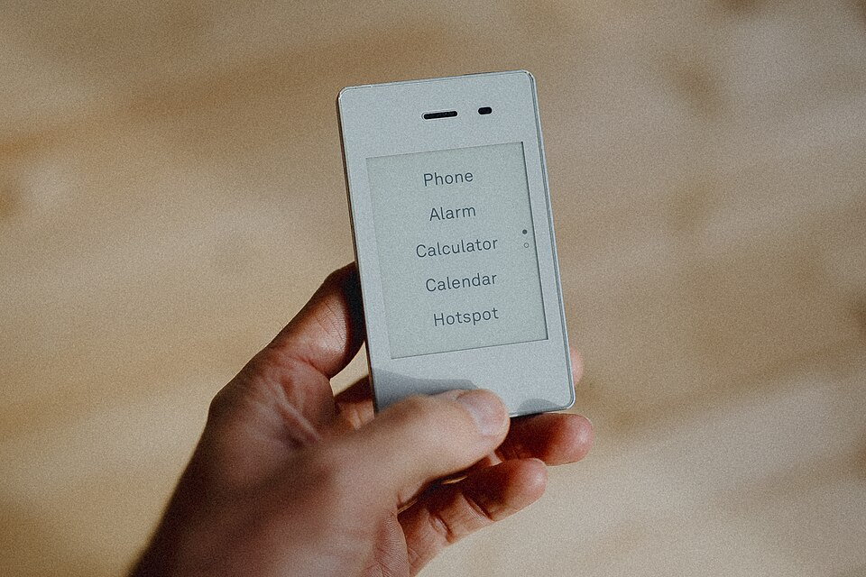
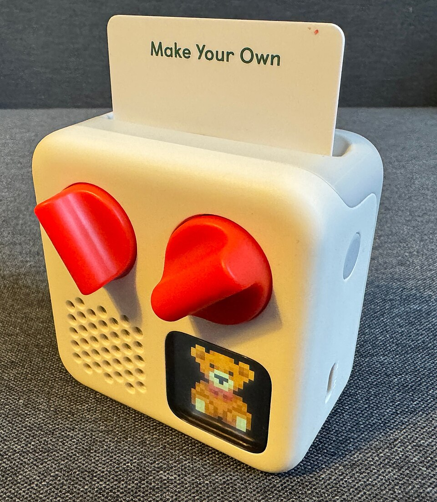

My youngest daughter asked me to check her money four times before breakfast.
Each time it was the same routine. Unlock my phone, pass Face ID, open Monzo, switch to her account, read the number aloud, show her the screen. I'm considered unreliable. She is seven. She does not have a phone, and won't for years. But her money lives inside mine, behind two authentication steps and an app she is not allowed to touch, and the only way she can see what she has is to borrow her dad's attention and face.

So I built her a thing. A little bank balance display using an M5StickC Plus, which is a tiny ESP32 device with a screen about the size of a postage stamp, talking to a Raspberry Pi on the home network. It hits the Monzo API, shows each kid's balance, and lets them send each other money. Kid one sends kid two £2 for swapping a pudding, it lands instantly, she accepts it, the balance ticks up on screen and she watches it climb. The whole thing cost about forty pounds and a weekend. (I wrote up the build in more detail here.)


They check their balance constantly now, far more than when it lived in my phone, because checking it is a physical act they control: pick up the device, press the button, read the screen. One of them worked out they could send themselves money from a sibling's account before I added any security, which is exactly the kind of thing you want a child to learn from a sibling who takes their pocket money rather than a scammer who takes their savings.
I went into this hands-on, in other words, before I had any opinion about it. The opinion came later, and it came from the building.
The phone ate everything, and now we are prying it back open
For about fifteen years we ran one of the great consolidations in the history of objects. The smartphone swallowed the camera, the Walkman, the landline, the games console, the photo album, the alarm clock, the calculator, the map. Every standalone thing in the house got pulled onto a single sheet of glass. We called it convenience, and it mostly was.
Now the motion appears to be running backwards. There is a small, growing category of devices whose entire pitch is that they do one of those things and nothing else.



{kind=link}


{kind=link}
Tin Can makes a Wi-Fi landline for kids, styled like a handset your nan would recognise. Yoto and Tonies sell screen-free audio players where a child slots in a physical card or stands a figurine on top to play a story. Chechirp is doing the same for streaming, with magnetic "Vinyls" you attach to summon a playlist or an audiobook. There is a revival of cheap digital cameras for kids, and a parallel market of "dumbphones" like the Light Phone for adults who want the same subtraction for themselves.


This is real, not a curiosity. Yoto's revenue grew about 86% in 2024 to roughly £95m, on top of a similar jump the year before, and took investment from Mark Zuckerberg and Priscilla Chan along the way. The wider kids' audio-player market was valued at around $3.2bn in 2025 and is forecast to roughly double by 2034. People are paying real money to take things off the one device that already does them.
Each of these products doesn't just remove a screen. They remove the feed, the notifications, the open network, the bottomless pull of other people's content. That's the product.
The actual craft is deciding what to leave out
There are design cues shared across this category: retro elements and functions brought up to date with bright colours and well-designed forms that fit the function and the eye of kids, along with the taste of parents.
They tend to replace digital menus and interactions with physical object-based interaction. Yoto has cards. Tonies has figurines. Chechirp has its Vinyls. In every case, an abstract on-screen choice has been turned back into a physical token you can hold, hand over, lose down the sofa. A three-year-old who can't read an interface can slot a card. Here the token is the interface.
These objects fight the normal product gravity to add features. Their value proposition is a list of things they refuse to do, and holding that line takes some nerve. You can only do it if you are certain about the single job the object exists for. A device that does less than a £15 supermarket phone, sold at a premium, is making an argument about attention rather than telephony, and the argument only holds if you never blink.

{kind=link}
If the category contributes one thing to product design, it's this: a choice you can hold in your hand, that the phone had flattened into one more identical tap.